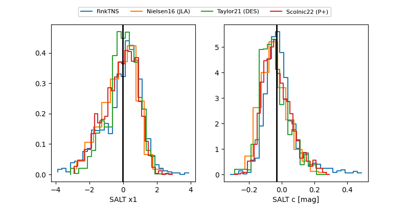

FINK: ZTF25abluqqp
Lasair: ZTF25abluqqp
ALeRCE: ZTF25abluqqp
TNS: 2025vkr
YSE: 2025vkr
ZTF25abluqqp (ztf,fink)
2025vkr (tns,yse)
equatorial (ra, dec) = (61.6591,-20.31068)
galactic (l, b) = (215.1431,-45.07710)

last atlaso=19.83, ztfg=19.76, ztfr=19.74
1 atlaso, 2 ztfg, 1 ztfr detections